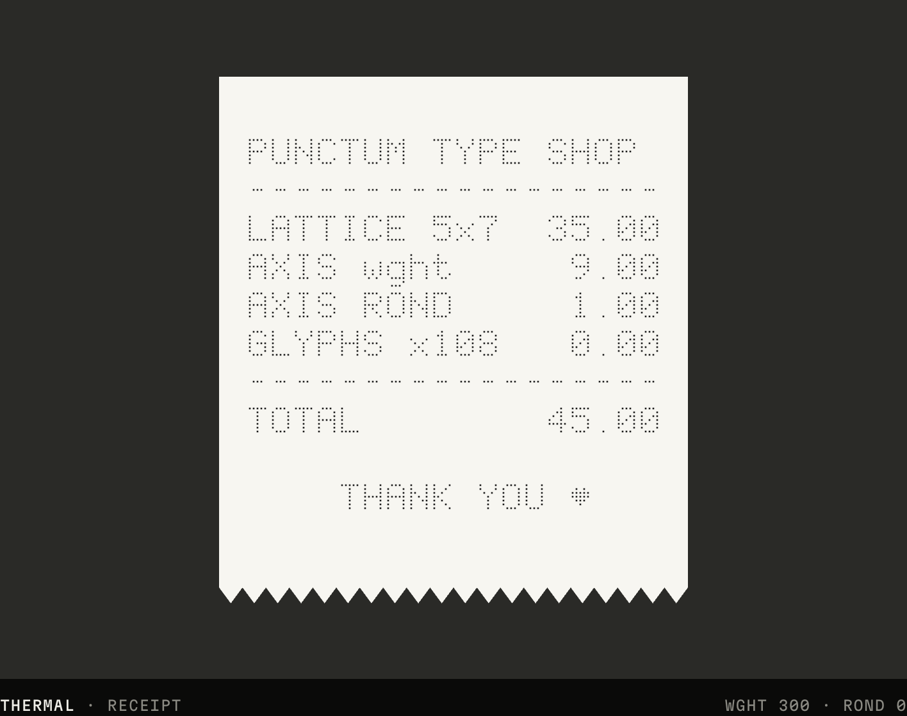

<!doctype html>
<html lang="en">
  <head>
    <meta charset="UTF-8" />
    <meta name="viewport" content="width=1920, height=1080" />
    <script src="https://cdn.jsdelivr.net/npm/gsap@3.14.2/dist/gsap.min.js"></script>
    <script src="assets/bitmaps.js"></script>
    <style>
      @font-face { font-family: "Punctum"; src: url("assets/Punctum-VF.woff2") format("woff2"); font-weight: 100 900; }
      * { margin: 0; padding: 0; box-sizing: border-box; }
      html, body { margin: 0; width: 1920px; height: 1080px; overflow: hidden; background: #050505; }
      #root { position: relative; width: 1920px; height: 1080px; overflow: hidden; background: radial-gradient(120% 90% at 50% 45%, #121211 0%, #050505 62%); }
      .layer { position: absolute; inset: 0; }
      .stage { position: absolute; inset: 0; perspective: 1500px; perspective-origin: 50% 46%; transform-style: preserve-3d; }
      .env { position: absolute; left: 50%; top: 50%; width: 7200px; height: 4400px; margin: -2200px 0 0 -3600px;
        background: radial-gradient(circle, #232321 0 2.4px, transparent 3px) 0 0 / 56px 56px; opacity: 0; }
      .cam { position: absolute; left: 50%; top: 50%; width: 1600px; height: 936px; margin: -468px 0 0 -800px; transform-style: preserve-3d; opacity: 0; backface-visibility: hidden; }
      .screen { position: absolute; inset: 0; border-radius: 16px; overflow: hidden; background: #0a0a09; border: 1px solid rgba(255,255,255,0.09); backface-visibility: hidden;
        box-shadow: 0 60px 140px rgba(0,0,0,0.75), 0 0 120px rgba(238,237,231,0.05); }
      .bar { position: absolute; left: 0; right: 0; top: 0; height: 36px; background: #121211; border-bottom: 1px solid #222220; display: flex; align-items: center; gap: 8px; padding-left: 16px; }
      .bar i { width: 11px; height: 11px; border-radius: 50%; background: #2c2c2a; display: block; }
      .bar span { position: absolute; left: 50%; transform: translateX(-50%); font-family: "Punctum"; font-size: 15px; color: #7e7d77; font-variation-settings: "wght" 500, "ROND" 100; }
      .screen video { position: absolute; left: 0; top: 36px; width: 1600px; height: 900px; display: block; }
      .p { font-family: "Punctum"; line-height: 1; white-space: pre; letter-spacing: 0; font-kerning: none;
        background-size: 0.1em 0.1em; background-position: 0.05em 0; padding: 0.1em; }
      .tour { position: absolute; left: 50%; top: 50%; width: 0; height: 0; transform-style: preserve-3d; opacity: 0; }
      .sheet { position: absolute; left: -800px; top: 0; width: 1600px; height: 9667px; transform-style: preserve-3d; }
      .sheet img { position: absolute; left: 0; width: 1600px; display: block; background: #0a0a09; }
      .deck { position: absolute; left: 50%; top: 50%; width: 0; height: 0; transform-style: preserve-3d; }
      .card { position: absolute; width: 708px; height: 560px; margin: -280px 0 0 -354px; border-radius: 18px; overflow: hidden; opacity: 0; box-shadow: 0 50px 120px rgba(0,0,0,.8); border: 1px solid rgba(255,255,255,.08); background: #0a0a09; }
      .card img { width: 100%; height: 100%; object-fit: cover; display: block; }
      .wall { position: absolute; left: 50%; top: 50%; width: 0; height: 0; transform-style: preserve-3d; }
      .tile { position: absolute; width: 480px; height: 281px; margin: -140px 0 0 -240px; border-radius: 8px; overflow: hidden; opacity: 0; border: 1px solid rgba(255,255,255,0.1); box-shadow: 0 30px 80px rgba(0,0,0,.7); background: #0a0a09; }
      .tile video, .tile img { width: 100%; height: 100%; display: block; object-fit: cover; }
      .hud { position: absolute; font-family: "Punctum"; font-size: 20px; line-height: 1; color: #8c8b84; font-variation-settings: "wght" 500, "ROND" 100; white-space: pre; opacity: 0; }
      .hud b { color: #eeede7; font-weight: normal; }
      #h-tl { left: 64px; top: 52px; } #h-tr { right: 64px; top: 52px; } #h-bl { left: 64px; bottom: 52px; } #h-br { right: 64px; bottom: 52px; }
      #flash { background: #fff; opacity: 0; mix-blend-mode: overlay; }
      .grain { pointer-events: none; opacity: 0.05; mix-blend-mode: overlay;
        background-image: url("data:image/svg+xml,%3Csvg xmlns='http://www.w3.org/2000/svg' width='240' height='240'%3E%3Cfilter id='n'%3E%3CfeTurbulence type='fractalNoise' baseFrequency='.9' numOctaves='2' seed='4'/%3E%3C/filter%3E%3Crect width='100%25' height='100%25' filter='url(%23n)'/%3E%3C/svg%3E"); }
      .vig { pointer-events: none; background: radial-gradient(75% 70% at 50% 48%, transparent 55%, rgba(0,0,0,0.6) 100%); }
    </style>
  </head>
  <body>
    <div id="root" data-composition-id="main" data-start="0" data-duration="66" data-width="1920" data-height="1080">
      <div class="stage" id="stage" data-layout-allow-overlap data-layout-allow-occlusion data-layout-allow-overflow>
        <div class="env" id="env"></div>
        <div class="tour" id="tour"><div class="sheet" id="sheet"></div></div>
        <div class="deck" id="deck"></div>
        <div class="wall" id="wall"></div>
      </div>
      <canvas id="fx" class="layer" data-layout-allow-overlap data-layout-allow-occlusion data-layout-allow-overflow width="1920" height="1080"></canvas>
      <div class="layer" id="flash"></div>
      <div class="hud" id="h-tl"></div><div class="hud" id="h-tr" data-layout-allow-overlap data-layout-allow-occlusion data-layout-allow-overflow></div><div class="hud" id="h-bl"></div><div class="hud" id="h-br"></div>
      <div class="layer vig"></div>
      <div class="layer grain"></div>
      <audio id="music" src="assets/music.wav" data-start="0" data-duration="66" data-track-index="20"></audio>
    </div>
    <script>
      /* ───────── shared helpers ───────── */
      const W = 1920, H = 1080, PB = window.PB;
      const clamp = (v, a, b) => Math.min(b, Math.max(a, v)), lerp = (a, b, t) => a + (b - a) * t;
      const seg = (t, a, b) => clamp((t - a) / (b - a), 0, 1);
      const eio = (u) => (u < 0.5 ? 4 * u * u * u : 1 - Math.pow(-2 * u + 2, 3) / 2), eout = (u) => 1 - Math.pow(1 - u, 3), eexp = (u) => (u >= 1 ? 1 : 1 - Math.pow(2, -10 * u));
      const DRUM = " ABCDEFGHIJKLMNOPQRSTUVWXYZ0123456789:.-/";
      const flap = (from, to, t, t0, st = 0.035, tick = 0.04) => { const fr = [...from], n = Math.max(fr.length, [...to].length);
        return [...to.padEnd(n)].map((ch, i) => {
          const s0 = t0 + i * st, steps = 5 + (i * 7) % 6, k = Math.floor((t - s0) / tick);
          if (t < s0) return fr[i] ?? " ";
          if (k >= steps) return ch;
          let e = DRUM.indexOf(ch.toUpperCase()); if (e < 0) e = 3;
          return DRUM[(e - steps + k + DRUM.length * 4) % DRUM.length];
        }).join(""); };
      const hash = (i, j) => { let h = Math.imul(i, 374761393) ^ Math.imul(j + 7, 668265263); h = Math.imul(h ^ (h >>> 13), 1274126177); return ((h ^ (h >>> 16)) >>> 0) / 4294967296; };

      // film = content time of the 60 s cut with an 8 s full-page tour spliced in after the hero
      const T0 = 5.6, SH = 6.0, FILM = 66;
      const S = (t) => (t >= T0 ? t + SH : t);
      const U = (ft) => (ft < T0 ? ft : ft < T0 + SH ? -1 : ft - SH);

      /* ───────── screen planes (camera wrapper > screen > timed video) ───────── */
      // [id, data-start, duration, media-start]
      const PLANES = [["hero", 0.85, 3.3, 0.6], ["idea", 5.6, 4.4, 0.5], ["system", 9.85, 6.6, 0], ["axes", 15.5, 9.0, 0], ["glyphs", 23.5, 7.0, 0],
        ["board", 29.5, 9.0, 0], ["tester", 37.5, 7.0, 0], ["footer", 51.5, 8.5, 0]];
      const stage = document.getElementById("stage");
      PLANES.forEach(([id, s, d, ms], i) => {
        const cam = document.createElement("div"); cam.className = "cam"; cam.id = "cam-" + id;
        cam.innerHTML = `<div class="screen" id="scr-${id}"><div class="bar" data-layout-allow-overlap data-layout-allow-occlusion data-layout-allow-overflow><i></i><i></i><i></i><span>punctum · type specimen</span></div>
          <video id="v-${id}" class="clip" src="capture/${id}.mp4" muted playsinline data-start="${S(s)}" data-duration="${d}" data-media-start="${ms}" data-track-index="${i % 3}"></video></div>`;
        stage.appendChild(cam);
      });
      const PAGE_H = 9667, TILE = 900, sheet = document.getElementById("sheet");
      const tiles = [];
      for (let i = 0; i * TILE < PAGE_H; i++) { const im = document.createElement("img"); im.src = `assets/page-${i}.png`; im.style.top = i * TILE + "px"; im.style.height = Math.min(TILE, PAGE_H - i * TILE) + "px"; sheet.appendChild(im); tiles.push(im); }
      const deck = document.getElementById("deck");
      for (let i = 0; i < 4; i++) { const c = document.createElement("div"); c.className = "card"; c.id = "card" + i; c.innerHTML = ``; deck.appendChild(c); }
      // finale wall: 3×3, centre slot is the live footer plane
      const WALL = [["hero", 1.0], ["idea", 2.5], ["system", 2.5], ["axes", 3.0], null, ["glyphs", 2.5], ["board", 4.0], ["tester", 2.5], ["use", 0]];
      const wall = document.getElementById("wall");
      WALL.forEach((m, i) => {
        if (!m) return;
        const el = document.createElement("div"); el.className = "tile"; el.id = "tile" + i;
        el.dataset.x = ((i % 3) - 1) * 520; el.dataset.y = (Math.floor(i / 3) - 1) * 310;
        el.innerHTML = m[0] === "use" ? `` : `<video id="w-${m[0]}" class="clip" src="capture/proxy/${m[0]}.mp4" muted playsinline data-start="${S(55.6)}" data-duration="4.4" data-media-start="${m[1]}" data-track-index="${4 + (i % 3)}"></video>`;
        wall.appendChild(el);
      });

      /* ───────── camera language per section ───────── */
      const F = (px, py, s, o = {}) => { const { dx = 0, dy = 0, ...rest } = o; return Object.assign({ x: (800 - px) * s + dx, y: (432 - py) * s + dy, z: 0, scale: s, rotationX: 0, rotationY: 0, rotationZ: 0, opacity: 1, filter: "blur(0px)" }, rest); };
      const P = (o) => Object.assign({ x: 0, y: 0, z: 0, scale: 1, rotationX: 0, rotationY: 0, rotationZ: 0, opacity: 1, filter: "blur(0px)" }, o);
      const SHOTS = {
        // HERO — dutch tilt slam, hard pull-back, drifting orbit
        hero: [[0.85, F(820, 400, 2.3, { rotationZ: -16, rotationX: 24, opacity: 0 })], [0.87, F(820, 400, 2.3, { rotationZ: -16, rotationX: 24 }), "none"],
          [1.5, F(780, 420, 1.12, { rotationZ: -4, rotationX: 12, rotationY: -18 }), "expo.out"], [3.25, F(900, 420, 1.3, { rotationZ: 3, rotationX: 6, rotationY: 14 }), "sine.inOut"],
          [3.6, F(900, 420, 1.3, { dy: -1150, rotationZ: 2, rotationX: 28, rotationY: 10, filter: "blur(14px)" }), "power3.in"], [3.61, F(900, 420, 1.3, { opacity: 0 }), "none"]],
        // IDEA — the page waits far behind the kinetic words, then the camera rushes in
        idea: [[5.6, F(800, 600, 1.05, { dy: 1150, rotationX: -26, filter: "blur(14px)", opacity: 0 })], [5.62, F(800, 600, 1.05, { dy: 1150, rotationX: -26, filter: "blur(14px)" }), "none"],
          [6.05, F(800, 470, 1.05, { rotationX: 8 }), "expo.out"], [6.9, F(800, 430, 1.1, { rotationX: 4 }), "sine.inOut"],
          [7.3, F(520, 308, 1.95, { rotationY: -14 }), "expo.inOut"], [8.0, F(980, 318, 1.95, { rotationY: -6 }), "sine.inOut"],
          [8.3, F(560, 456, 1.75, { rotationY: 12 }), "expo.out"], [8.95, F(1000, 462, 1.8, { rotationY: 6 }), "sine.inOut"],
          [9.25, F(180, 600, 2.7, { rotationY: -8 }), "expo.out"], [9.55, F(176, 604, 3.1, { rotationY: -4 }), "sine.inOut"],
          [9.9, F(170, 608, 16, { filter: "blur(4px)" }), "expo.in"], [9.92, F(170, 608, 16, { opacity: 0 }), "none"]],
        // SYSTEM — orthographic: flat 2D pans, a snap zoom on every bar
        system: [[9.85, F(800, 480, 0.35, { z: -600, opacity: 0 })], [9.88, F(800, 480, 0.35, { z: -600 }), "none"], [10.35, F(800, 480, 1.0), "expo.out"],
          [10.5, F(800, 485, 1.02), "sine.inOut"], [10.85, F(300, 650, 2.1), "expo.out"], [11.6, F(420, 650, 2.1), "sine.inOut"],
          [11.95, F(780, 650, 2.1), "expo.out"], [12.6, F(900, 650, 2.1), "sine.inOut"], [12.95, F(1300, 640, 1.9), "expo.out"], [13.7, F(1360, 620, 1.9), "sine.inOut"],
          [14.3, F(800, 560, 1.08), "expo.inOut"], [15.6, F(800, 600, 1.14), "sine.inOut"], [16.3, F(800, 600, 1.0, { dx: -1500, rotationY: -80, opacity: 0 }), "power3.in"]],
        // AXES — cube in, then a wide orbit around the pad while it is dragged
        axes: [[15.6, F(800, 400, 1.05, { dx: 1500, rotationY: 80, opacity: 0 })], [16.4, F(800, 400, 1.05, { rotationX: 10, rotationY: -18 }), "power3.out"],
          [19.0, F(800, 400, 1.08, { rotationX: 6, rotationY: 0 }), "sine.inOut"], [21.6, F(800, 400, 1.05, { rotationX: 10, rotationY: 18 }), "sine.inOut"],
          [22.4, F(800, 420, 1.12, { rotationX: 4, rotationY: 6 }), "expo.inOut"], [23.3, F(1117, 395, 1.5, { rotationX: 2 }), "expo.inOut"],
          [24.0, F(1117, 395, 9), "expo.in"], [24.05, F(1117, 395, 9, { opacity: 0 }), "none"]],
        // GLYPHS — top-down macro tracking the cursor, ends on a card flip
        glyphs: [[24.0, F(520, 200, 1.75, { rotationX: 50, opacity: 0 })], [24.15, F(520, 200, 1.75, { rotationX: 50 }), "none"],
          [24.6, F(500, 200, 1.75, { rotationX: 42 }), "power2.out"], [26.0, F(1250, 250, 1.75, { rotationX: 40, rotationZ: -5 }), "none"],
          [26.9, F(220, 320, 1.85, { rotationX: 18, rotationY: 26 }), "expo.inOut"], [28.0, F(760, 240, 1.5, { rotationX: 28, rotationY: -8 }), "expo.inOut"],
          [29.3, F(800, 440, 0.95, { rotationX: 6 }), "expo.inOut"], [30.2, F(800, 440, 0.95, { rotationY: 180 }), "power3.inOut"], [30.25, F(800, 440, 0.95, { rotationY: 180, opacity: 0 }), "none"]],
        // BOARD — back face of the flip, then locked-off frontal with hard punch-in cuts
        board: [[29.3, F(800, 420, 0.95, { rotationY: -180 })], [30.2, F(800, 420, 0.95, { rotationY: 0 }), "power3.inOut"],
          [31.2, F(800, 420, 1.08), "sine.inOut"], [32.0, F(800, 420, 1.08), "none"], [32.01, F(760, 400, 1.32), "none"], [33.2, F(780, 400, 1.36), "sine.inOut"],
          [33.21, F(980, 640, 1.55), "none"], [34.3, F(980, 650, 1.6), "sine.inOut"], [34.31, F(450, 728, 2.0), "none"], [35.9, F(560, 728, 2.05), "sine.inOut"],
          [35.91, F(800, 420, 1.0), "none"], [37.55, F(800, 420, 1.14), "sine.inOut"], [38.2, F(800, 420, 1.1, { dx: -2600, filter: "blur(18px)", opacity: 0 }), "power3.in"]],
        // TESTER — extreme close-up riding the caret, swing down to the sliders, squash out
        tester: [[37.7, F(320, 300, 2.5, { dx: 2600, filter: "blur(18px)", opacity: 0 })], [38.4, F(320, 300, 2.5, { rotationY: -8 }), "power3.out"],
          [38.7, F(330, 300, 2.5, { rotationY: -8 }), "none"], [39.85, F(1040, 300, 2.4, { rotationY: 8 }), "none"],
          [40.5, F(620, 190, 1.6, { rotationX: 28 }), "expo.inOut"], [43.2, F(760, 230, 1.5, { rotationX: 20, rotationY: -12 }), "sine.inOut"],
          [44.0, F(760, 230, 0.3, { rotationZ: 14, opacity: 0 }), "power3.in"]],
        // FOOTER — low angle looking up, then it shrinks into the centre of the wall
        footer: [[51.7, F(800, 380, 1.55, { rotationX: -24, opacity: 0 })], [52.1, F(800, 380, 1.5, { rotationX: -22 }), "power2.out"],
          [53.8, F(800, 380, 1.15, { rotationX: -8, rotationY: 12 }), "expo.out"], [55.3, F(800, 380, 1.2, { rotationX: -6, rotationY: 6 }), "sine.inOut"],
          [56.2, P({ scale: 0.3 }), "expo.inOut"], [57.95, P({ scale: 0.3 }), "none"], [58.5, P({ scale: 0.3, z: -800, opacity: 0 }), "power3.in"]],
      };
      window.__timelines = window.__timelines || {};
      const tl = gsap.timeline({ paused: true });
      Object.entries(SHOTS).forEach(([id, k]) => {
        const el = "#cam-" + id;
        tl.set(el, { ...k[0][1], opacity: 0 }, 0);
        if (k[0][0] > 0) tl.set(el, { ...k[0][1] }, S(k[0][0]));
        for (let i = 1; i < k.length; i++) { const [t, pose, ease] = k[i], t0 = k[i - 1][0]; tl.to(el, { ...pose, duration: Math.max(0.001, S(t) - S(t0)), ease }, S(t0)); }
      });
      // board: shake + flash on every click
      tl.set("#scr-board", { x: 0, y: 0 }, 0);
      [32.05, 33.2, 34.5, 35.95].forEach((t) => {
        tl.to("#scr-board", { keyframes: [{ x: -14, y: 6, duration: 0.04 }, { x: 10, y: -8, duration: 0.04 }, { x: -5, y: 3, duration: 0.05 }, { x: 0, y: 0, duration: 0.06 }] }, S(t));
        tl.fromTo("#flash", { opacity: 0.32 }, { opacity: 0, duration: 0.3, ease: "power2.out", immediateRender: false }, S(t));
      });
      [0.87, 3.6, 5.92, 9.88, 16.0, 30.2, 44.0, 48.0, 56.2].forEach((t) => tl.fromTo("#flash", { opacity: 0.4 }, { opacity: 0, duration: 0.45, ease: "power2.out", immediateRender: false }, S(t)));
      tl.fromTo("#flash", { opacity: 0.9 }, { opacity: 0, duration: 0.35, ease: "power2.out", immediateRender: false }, 0);

      // IN USE — cards fly in one per beat, 2×2 cluster drifts, carousel on the drop, collapse 51.5
      const CL = [[-380, -300, -10, 8], [380, -300, 10, -6], [-380, 300, -8, -8], [380, 300, 8, 6]];
      for (let i = 0; i < 4; i++) {
        const c = "#card" + i, t0 = 44.0 + i * 0.5, [x, y, ry, rz] = CL[i];
        tl.set(c, { x: x * 3, y: y * 3, z: -3000, rotationY: ry * 6, rotationZ: rz * 4, opacity: 0, scale: 1 }, 0);
        tl.to(c, { x, y, z: 0, rotationY: ry, rotationZ: rz, opacity: 1, duration: 0.7, ease: "expo.out" }, S(t0));
        tl.to(c, { x: x * 1.04, y: y * 1.04, rotationY: ry * 1.6, duration: 48 - t0 - 0.7, ease: "sine.inOut" }, S(t0 + 0.7));
        const a = (i / 4) * Math.PI * 2;
        tl.to(c, { x: Math.sin(a) * 900, y: 0, z: Math.cos(a) * 900 - 900, rotationY: (a * 180) / Math.PI, rotationZ: 0, duration: 0.6, ease: "expo.out" }, S(48.0));
        tl.to(c, { x: 0, y: 0, z: -900, scale: 0.1, opacity: 0, duration: 0.5, ease: "power3.in" }, S(51.5));
      }
      tl.set("#deck", { rotationY: 0, rotationX: 0 }, 0);
      tl.to("#deck", { rotationX: 8, duration: 4, ease: "sine.inOut" }, S(44));
      tl.to("#deck", { rotationY: -300, rotationX: 12, duration: 3.5, ease: "power2.inOut" }, S(48.0));

      // FINALE wall
      WALL.forEach((m, i) => {
        if (!m) return;
        const el = document.getElementById("tile" + i), x = +el.dataset.x, y = +el.dataset.y, d = Math.hypot(x, y) / 600;
        tl.set(el, { x: x * 2.4, y: y * 2.4, z: -1600, opacity: 0, rotationY: x / 30, rotationX: 0 }, 0);
        tl.to(el, { x, y, z: 0, opacity: 1, rotationY: 0, duration: 0.8, ease: "expo.out" }, S(55.9 + d * 0.15));
        tl.to(el, { z: -900 - d * 300, y: y + 200, opacity: 0, rotationX: -40, duration: 0.6, ease: "power3.in" }, S(57.85 + d * 0.12));
      });
      tl.set("#wall", { rotationY: -14, rotationX: 6 }, 0);
      tl.to("#wall", { rotationY: 12, rotationX: 2, duration: 3, ease: "sine.inOut" }, S(55.6));

      // environment lattice drifts with each camera language
      const ENV = [[0, { x: 0, y: 0, rotationZ: 0, scale: 1, opacity: 0 }], [2.0, { x: 0, y: 80, rotationZ: -4, opacity: 0.9 }], [6.0, { x: 0, y: -300, rotationZ: 0, opacity: 0.5 }],
        [10.0, { x: 300, y: -300, opacity: 0.9 }], [16.0, { x: -900, y: -300 }], [24.0, { x: -900, y: 400, rotationZ: 15 }], [30.2, { x: -1500, y: 400, rotationZ: 15 }],
        [38.0, { x: -2300, y: 400, rotationZ: 15 }], [44.0, { x: -2300, y: 400, rotationZ: 0, scale: 0.8 }], [48.0, { x: -2600, y: 300, scale: 1.1 }], [56.2, { x: -2600, y: 300, scale: 0.7, rotationZ: 6 }], [60, { x: -2700, y: 280, scale: 0.75, opacity: 0.4 }]];
      tl.set("#env", { ...ENV[0][1], z: -1400 }, 0);
      for (let i = 1; i < ENV.length; i++) tl.to("#env", { ...ENV[i][1], duration: S(ENV[i][0]) - S(ENV[i - 1][0]), ease: "expo.inOut" }, S(ENV[i - 1][0]));

      // OVERVIEW — the whole page as one tall sheet; camera glides head to tail, then the footer flattens to face us
      const TF = { f: 450 };
      tl.set("#tour", { opacity: 0, x: 0, y: 0, z: -600, scale: 1, rotationX: 38, rotationY: 0, rotationZ: -16, filter: "blur(0px)" }, 0);
      tl.set(TF, { f: 450 }, 0);
      tl.set("#tour", { opacity: 1, y: 1150, filter: "blur(14px)" }, 3.6);
      tl.to("#tour", { y: 0, filter: "blur(0px)", duration: 0.5, ease: "expo.out" }, 3.6);
      tl.to("#tour", { rotationZ: 10, rotationX: 30, duration: 6.4, ease: "sine.inOut" }, 4.0);
      tl.to(TF, { f: 9150, duration: 6.8, ease: "power1.inOut" }, 3.95);
      tl.to("#tour", { rotationX: 0, rotationZ: 0, z: -250, duration: 0.9, ease: "expo.inOut" }, 10.4);
      tl.to("#tour", { y: -1150, filter: "blur(14px)", duration: 0.35, ease: "power3.in" }, 11.6);
      tl.set("#tour", { opacity: 0 }, 11.96);

      /* ───────── per-frame layers (pure functions of t) ───────── */
      const $ = (id) => document.getElementById(id);
      const fx = $("fx").getContext("2d");
      function dotsText(ctx, str, cx, cy, p, col, alpha, rFn, square = false) {
        const chars = [...str], w0 = chars.length * 6 * p - p, x0 = cx - w0 / 2, y0 = cy - 4 * p;
        ctx.fillStyle = col; ctx.globalAlpha = alpha; ctx.beginPath();
        chars.forEach((ch, n) => { const bm = PB[ch]; if (!bm) return;
          for (let r = 0; r < 9; r++) for (let q = 0; q < 5; q++) if (bm[r][q] === "#") {
            const x = x0 + (n * 6 + q) * p + p / 2, y = y0 + r * p + p / 2, rr = rFn(x, y, n);
            if (rr > 0.3) { if (square) ctx.rect(x - rr, y - rr, 2 * rr, 2 * rr); else { ctx.moveTo(x + rr, y); ctx.arc(x, y, rr, 0, 6.2832); } } } });
        ctx.fill(); ctx.globalAlpha = 1;
      }
      function lattice(ctx, p, r, col, alpha) {
        if (alpha <= 0) return;
        ctx.fillStyle = col; ctx.globalAlpha = alpha; ctx.beginPath();
        for (let y = p / 2; y < H; y += p) for (let x = p / 2; x < W; x += p) { ctx.moveTo(x + r, y); ctx.arc(x, y, r, 0, 6.2832); }
        ctx.fill(); ctx.globalAlpha = 1;
      }
      // dot-grid iris: dots grow outward from an origin to cover, then shrink away in the same order
      function iris(ctx, t, t0, ox, oy, col = "#0a0a09", dur = 0.8) {
        if (t < t0 || t > t0 + dur) return;
        const u = (t - t0) / dur, p = 48, maxd = Math.hypot(W, H);
        ctx.fillStyle = col; ctx.beginPath();
        for (let y = p / 2; y < H + p; y += p) for (let x = p / 2; x < W + p; x += p) {
          const d = Math.hypot(x - ox, y - oy) / maxd;
          const a = clamp((u * 2 - d * 0.7) / 0.3, 0, 1), b = clamp(((u - 0.5) * 2 - d * 0.7) / 0.3, 0, 1);
          const r = p * 0.75 * (a - b); if (r > 0.5) { ctx.moveTo(x + r, y); ctx.arc(x, y, r, 0, 6.2832); }
        }
        ctx.fill();
      }
      function drawFx(t) {
        fx.clearRect(0, 0, W, H);
        // COLD OPEN 0–1.2: PUNCTUM slams in on frame one, squares up on the beat, then punches through into the hero
        if (t >= 0 && t < 1.3) {
          const fade = 1 - seg(t, 0.95, 1.2);
          if (t < 1.0) { fx.fillStyle = "#050505"; fx.globalAlpha = 1 - seg(t, 0.82, 1.0); fx.fillRect(0, 0, W, H); fx.globalAlpha = 1; }
          lattice(fx, 40, 2.2, "#262624", fade);
          const s = flap("       ", "PUNCTUM", t, 0.0, 0.022, 0.026);
          const sc = t < 0.7 ? 40 * (1 + 1.4 * Math.pow(1 - eout(seg(t, 0, 0.3)), 2)) : 40 * (1 + eexp(seg(t, 0.7, 1.15)) * 3.4);
          const square = t >= 0.5 && t < 0.72;
          dotsText(fx, s, W / 2, H / 2 + 20, sc, "#f2f1ea", fade, () => sc * (square ? 0.47 : 0.42), square);
        }
        // AXES → GLYPHS: fall into a dot, white out, dots open onto the next page
        if (t > 23.7 && t < 24.7) {
          if (t < 24.1) { const r = Math.pow(seg(t, 23.7, 24.05), 3) * 1300; fx.fillStyle = "#f2f1ea"; fx.beginPath(); fx.arc(W / 2, H / 2 - 40, r, 0, 6.2832); fx.fill(); }
          else iris(fx, t, 23.75, W / 2, H / 2, "#f2f1ea", 0.9);
        }
        // BOARD → TESTER: light-streak whip
        if (t > 37.6 && t < 38.5) {
          const u = seg(t, 37.6, 38.5), k = Math.sin(Math.PI * u);
          for (let i = 0; i < 40; i++) { const y = hash(i, 3) * H, len = (300 + hash(i, 5) * 1400) * k, x = (1 - u) * W * 1.6 - hash(i, 7) * 800 + len;
            fx.fillStyle = `rgba(242,241,234,${0.15 + 0.5 * hash(i, 9)})`; fx.fillRect(x - len, y, len, 1 + hash(i, 11) * 3); }
        }
        iris(fx, t, 51.4, W / 2, H / 2);
        // END CARD
        if (t > 58.5) {
          const a = seg(t, 58.5, 58.7) * (1 - seg(t, 59.55, 59.95));
          const s = flap("       ", "PUNCTUM", t, 58.55, 0.04, 0.032);
          dotsText(fx, s, W / 2, H / 2 - 40, 30, "#f2f1ea", a, () => 12);
          fx.globalAlpha = a; fx.fillStyle = "#8c8b84"; fx.font = '28px "Punctum"'; fx.textAlign = "center";
          fx.fillText(flap("", "VARIABLE DOT-MATRIX TYPEFACE · WGHT 100-900 · ROND 0-100", t, 58.7, 0.006, 0.028), W / 2, H / 2 + 170); fx.globalAlpha = 1;
        }
      }
      const SECT = [[0, "PUNCTUM"], [0.85, "HERO"], [3.6, "OVERVIEW"], [12, "IDEA"], [16, "SYSTEM"], [22, "AXES"], [30, "GLYPHS"], [36, "BOARD"], [44, "TESTER"], [50, "IN USE"], [58, "INFO"], [62, "PUNCTUM"]];
      const num = (i) => String(i).padStart(2, "0");
      function drawLayers(t) {
        // HUD
        let m = 0; SECT.forEach(([s], i) => { if (t >= s) m = i; });
        $("h-tl").textContent = "PUNCTUM  SPECIMEN";
        $("h-tr").innerHTML = `<b>${flap(num(Math.max(0, m - 1)), num(m), t, SECT[m][0])}</b> / 11`;
        $("h-bl").textContent = flap(m ? SECT[m - 1][1] : "", SECT[m][1], t, SECT[m][0]);
        $("h-br").textContent = `00:${num(Math.floor(t))}:${num(Math.floor(t * 60) % 60)}`;
        const hv = t > 0.9 && t < S(58.1) ? 1 : 0; ["h-tl", "h-tr", "h-bl", "h-br"].forEach((id) => ($(id).style.opacity = hv));
        // tour sheet: glide position + cull tiles that would swing behind the camera
        $("sheet").style.transform = `translateY(${-TF.f}px)`;
        tiles.forEach((im, i) => { const top = i * TILE; im.style.visibility = top < TF.f + 2300 && top + TILE > TF.f - 7000 ? "visible" : "hidden"; });
        drawFx(U(t));
      }
      const clock = { t: 0 };
      tl.to(clock, { t: FILM, duration: FILM, ease: "none", onUpdate: () => drawLayers(clock.t) }, 0);
      drawLayers(0);
      window.__timelines["main"] = tl;
    </script>
  </body>
</html>
